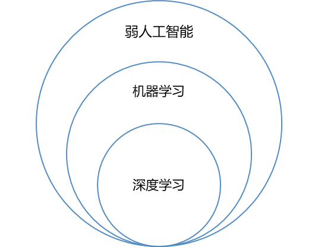

AI简述

广义的人工智能是指“通过计算机实现人类思维的效果，能从环境中获取感知并行动“ 的现象。
我们大致可以把广义人工智能分为弱人工智能和强人工智能。
弱人工智能
处理特定的问题，并不具有人类感知能力。弱人工智能包含了机器学习，机器学习又包括了深度学习。
强人工智能
是具备与人类同等智慧或超越人类的人工智能，能表现正常人类所具有的所有智能行为。
计算机科学与软件工程的明显区别
下图展示了两者的区别：

学习AI建议
- 有科学家素养的工程师
- 在AI领域具备源头创新能力，具备解决企业关键技术难题的能力
- 源头创新能力:如果要培养源头创新能力，那么就需要打开一些黑盒子，刨根问底，而不能满足于仅仅会调用一些函数，使用一些现成的工具。
核心能力是什么
我们要培养的能力是计算思维，是：
- 观察，找到事物变化的模式和规律；
- 逻辑的组织和分析数据；
- 把问题解法变为有组织，可重复的步骤；
- 把问题解法抽象，变为更通用，应用在更多领域。
强调动手+动脑，不要急于学习最时髦的东西，而是要把基础数学和基础编程学习好，锻炼高质量的工程能力，自己提出问题，自己解决问题。
文章摘抄来源：https://github.com/microsoft/ai-edu/blob/master/B-教学案例与实践/B0-introduction/AI301_intro.md